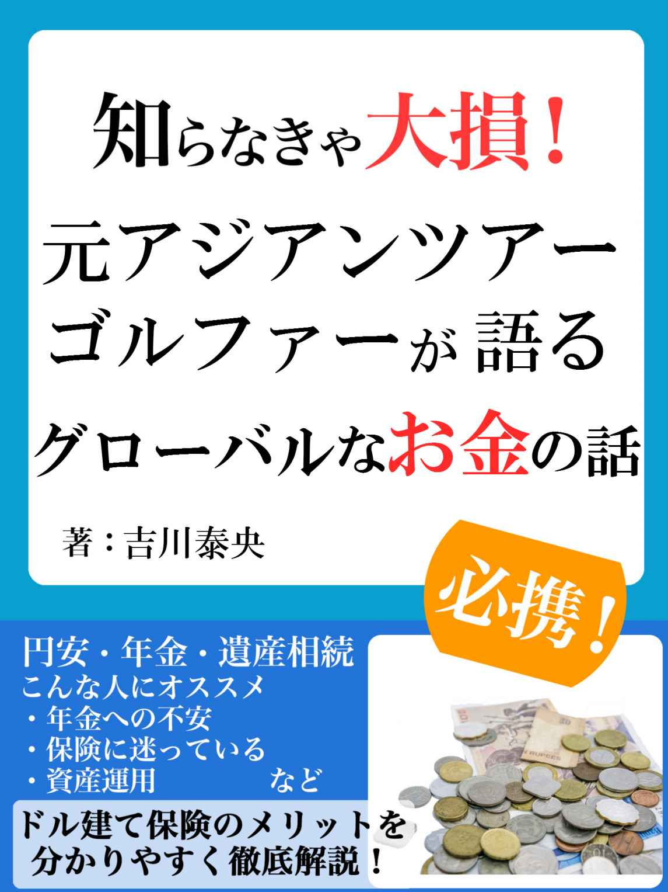
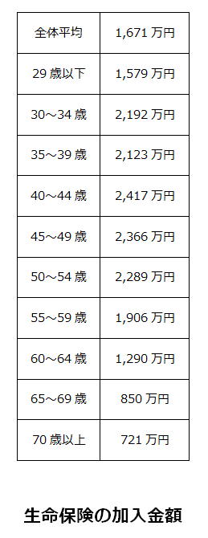
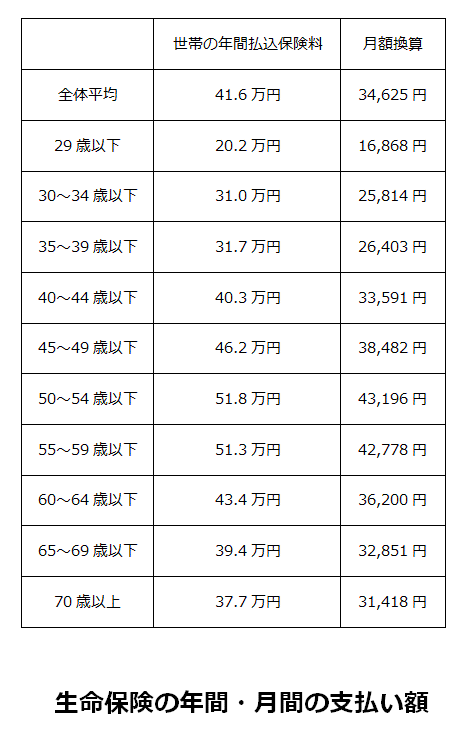

| 知らなきゃ大損！ 元アジアンツアーゴルファーが語るグローバルなお金の話 | |
| 吉川泰央 | |
| (2017) | |

初めまして、吉川泰央と申します。
『知らなきゃ大損！ 元アジアンツアーゴルファーが語るグローバルなお金の話』を手に取って頂き、誠にありがとうございます。
まずは、簡単に自己紹介をさせてください。
アジアンツアーゴルファーとして、アジアの各所でゴルフをおこなってきました。プロゴルファーを引退後に、十数年にわたり会社を経営し、その会社を売却しました。
会社の売却後は金融業界へ興味を抱き、40
歳で保険会社へと転身します。
３年間にわたり一社専属で活動をおこなった後、もっとさまざまな個人の方に柔軟に対応したお仕事をしたいという思いから、現在のFP会社にて個人の資産構築や資産運用に関するトータルコンサルタントを務めています。
さて、この本をお読みになっている皆さんの多くは、恐らくグローバルな視点で捉えたお金について興味があるのではないでしょうか。
しかし、お金に関する情報が多すぎて、何を信じたらいいのかよく分からない。そうした悩みを漠然と持っているのではないでしょうか。
そこで、本書ではお金に関するお話、中でもこれから先を見据えた保険の種類やしくみについて、皆さんにあまり馴染みのないであろう外資系のドル建て生命保険についても触れながら、ご紹介していきたいと思います。
まず第一章では、これからの日本で皆さんが直面するであろう問題に触れていきます。
次に第二章では、生命保険の大枠のしくみや用語、各種データをご紹介します。
そして第三章では、第一章の問題を解決できるような、皆さんの知らないような保険の知識やテクニックをご紹介します。
第三章についてですが、保険といっても、ただ病気をしたときの備え・死亡したときの備えになるだけではありません。
年金への不安解消、資産の運用、遺産相続、税金対策。さまざまな側面で、保険というものは役に立ちます。
「保険と年金に、どんな関係が......？」
気になる方は、第三章を読めば「そういうことか！」と分かると思います。
それでは、『知らなきゃ大損！ 元アジアンツアーゴルファーが語るグローバルなお金の話』。最後までお付き合いいただければ幸いです。
お金のトータルコンサルティングについて、
ご連絡はこちら
『キッザニア』という言葉を聞いたことがあるでしょうか。
子供たちが楽しみながら、職業を体験することができる施設です。世界各地に施設があり、日本にも『キッザニア東京』と『キッザニア甲子園』という２種類の施設があります。
このキッザニアという施設ですが、職業を体験すると『キッゾ』という専用通貨をもらうことができます。
この通貨を使うことで、キッザニアの街を一周する観光バスに乗ることができたり、スポーツクラブに参加したりできます。
また、施設の外ではノートを買ったりすることもできます。しかし、１つの施設でもらえる報酬は５～８キッゾであるのに対し、ノートは８０キッゾほどかかるため、あまり割に合わないと言えます。
もちろん、あくまでメインは楽しみながら職業体験という部分であり、報酬は副次的なものではありますから、割に合うかどうかを気にしすぎるのは良くありませんね。
さて、実はこの『キッゾ』の使い方について、海外と日本の子供を比較すると興味深い結果が出てきました。
海外の子供は施設内でキッゾを使いきるのに対し、日本の子供はキッゾを使いきらず、施設の外に持ち帰る傾向にあるというのです。
先ほどもお書きしたとおり、施設内ではバスやスポーツクラブなど、キッゾを使用して楽しめるものがたくさんあります。
しかし、日本の子供はそれらを楽しむよりも、キッゾを貯蓄する傾向にある。
つまり、海外の子供は運用気質であるのに対し、日本の子供は貯蓄気質であると言えるのです。
これは成人でも同様で、海外、特にアメリカ人は投資気質であるのに対し、日本人は貯蓄気質です。株や不動産などの投資に回す額よりも、銀行に預けておく額のほうが、日本人の場合は何倍も多いのです。
それでは、なぜ日本では大人も子供もお金を貯蓄に回すのでしょうか。それは、日本の教育に原因があります。
そう、日本ではお金に関する教育を一切やらないのです。
お金に関する教育、いわゆる『マネー教育』の先進国であるアメリカでは、幼稚園から高校に渡り、マネー教育のプログラムが整備されています。
例えば、経済教育ＮＰＯの協力を得て、生徒が実際に株の取引をおこなったり、世界でリアルタイムに起こっている経済面の推移を紹介したり。そうしたマネー教育が、子供のうちからおこなわれているのです。
一方、日本の学校では、こうしたマネー教育はおこなわれていませんね。むしろ、お金に関する話題を子供のうちから出すことは敬遠される傾向にあります。
小さいうちからお金を扱う経験をしていた子供が経済的に大成するというお話は、『金持ち父さん貧乏父さん』などの書籍で目にした方も多いかもしれません。
実際のところ、小さい頃からピアノを習っていた子供が絶対音感を得られるのと同様、小さい頃からお金に触れていた子供はお金に関する知識や嗅覚が秀でたものになるでしょう。
言ってしまえば、お金に関する面では、大人になるまでの間に日本人は外国人に差を付けられていると言っても過言ではありません。
こうしたお金に関する知識の不足や扱うことへの抵抗感は、これから先の日本においてどんどん問題が表面化していくと思われます。
では、次の項目から、その表面化するであろう問題を取り上げていきます。
『２１世紀の資本』という著作で話題となったトマ・ピケティは、日本経済新聞のインタビューに、以下のように答えました。
「１９４５年の仏独はＧＤＰ比２００％
の公的債務を抱えていたが、１９５０年には大幅に減った。もちろん債務を返済したわけではなく、物価上昇が要因だ。安倍政権と日銀が物価上昇を起こそうという姿勢は正しい。物価上昇なしに公的債務を減らすのは難しい。２～４％
程度の物価上昇を恐れるべきではない」
これは一見、アベノミクスによる物価の上昇を肯定しているように思われます。
しかし、アベノミクスによる物価の上昇は、債務削減とは別の問題を起こすという考えがあります。
それは、各家庭の貯蓄額は上がらないのに、物価が上がってしまうという問題。つまり、経済の停滞（＝不況）と物価の上昇が両立してしまう『スタグフレーション』という問題です。
この『スタグフレーション』は、一見景気が回復しているように見えるため経済の動きが表出しないことが問題ですが、それ以上の問題もあります。
それは、元から貯蓄気質であった日本人が、さらに貯蓄気質を加速させるということです。
家庭の貯蓄額が同じ、または減少しているのに物価が上昇しているという状態は、お金の消費を減少させます。人々に「ものの値段が安くなるまで待とう」という心理が働くためです。
消費の減少は景気のさらなる冷え込みを加速させ、国家の財政状況を悪化させます。すると、政府は公的債務を減らすべく、さらに物価上昇を加速させようとします。
物価が高くなり、消費が冷え込む。政府の手が加わりさらに物価が高くなり、さらに消費が冷え込む。
こうした悪循環こそが、『スタグフレーション』の本質的な問題なのです。
経済がこのようになってしまうと、少ない貯蓄をタンスや銀行にため込むことは、あまり良い策ではないことは自明だと思います。
しかし、お金に関する教育のされていない日本人の多くは、お金を貯めるか使うかの２択しか選択肢がありません。それでは、これから訪れるであろう経済の混乱に立ち向かうことは、かなり困難であると予想できます。
もちろん、こうしたスタグフレーションが起こるというのはあくまで予測のひとつであり、現政府の政策が一概に間違い・正しいとは断言することはできません。
また、スタグフレーションの要因には原油の価格の上昇など、政策以外の側面も関わっており、起こるかどうかを事前に判断するのはとても困難です。
あくまで想定できる展開のひとつとして、捉えて頂ければと思います。
老後の心配というと、年金が貰えるかどうかという点を思い浮かべる方が多いのではないでしょうか。
団塊の世代の高齢化や少子化の影響、年金の未払いの加速などから、これから先の年金に関する問題は無視できるものではありません。
年金が貰えない人が出てくる可能性や、貰えたとしてもそれだけでは生きていけない額まで減少する可能性もあります。
しかし、実はこの年金について。必ず貰えるはず（だった）という想定のほうが、世界で見れば特殊だったりします。
というのも、海外の多くの国では老後の収入は自分で作りあげるのが当然という考えがスタンダードであり、政府が何とかしてくれるという考えのほうが少数なのです。
つまり、グローバルな視点で見れば、年金がほぼ確実に貰えた過去の日本のほうが特別な状態だったと言えます。
とはいえ、日本で年金が貰えなくなるのは依然として問題ではあります。日本人の成人男性の多くはサラリーマンを始めとする賃金労働者であり、定年で退職してからは収入の途絶える家庭が多いのです。
この収入が途絶える状態を、海外の壮年期の男性は、不動産投資や株、老後でもできるビジネスによって避けようとします。一方、日本人の多くは、こうした老後への準備をすることが苦手です。
苦手というよりも、そもそもそうした発想自体をもたない人が多いのではないでしょうか。
そうした老後の対策を取ろうとしなかったことは、やはり今まで年金に関するシステムが破たんせず機能していたことと、大人になるまでの教育でお金に関する事柄が避けられていたことが起因していると思われます。
つまり、「老後も何とかなるだろう」と国民の多くが思っていたことは、ある意味仕方のないことだったのです。
しかし、これから先に直面するであろう年金問題を考慮すると、老後に収入が途絶えることを避ける方法を、今のうちから模索しておく必要があると感じます。
非正規雇用の増加や大手企業の一斉リストラから、雇用に関する不安・問題が浮き彫りになってきました。
先ほど挙げた年金問題は、言ってしまえば老後になってはじめて割を食う問題です。しかし、雇用に関する問題は、定年になるずっと前の話。明日ご飯が食べられなくなるかもしれないという問題を含んでいるのです。
さらに、これから先多くの移民が、安価な労働力として労働市場に流入してくる可能性があります。そうすると、日本人の雇用状況はさらに悪化するおそれがあります。
不安を煽るような話ばかりで恐縮ではありますが、あくまで可能性として、しかし起こり得る問題であることはぜひ頭の片隅に置いておいてください。
日本人が貯蓄気質であると書いたものの、徐々にではありますが、国民の投資意欲が増してきたように思います。
というのも、やはり今後の経済不安や年金への不安、そして雇用の不安から、国民一人ひとりに「なんとかしなければ！」という意識が芽生えたことが大きな理由です。
しかし、こうした投資意欲の増加から、投資詐欺の被害が増えています。
私が耳にした例では、銀行からの融資の手続きを代行したうえで、東南アジアのとある会社への投資を持ちかけるケースがあります。
真相としては、この東南アジアにあるとされる会社は架空の会社であり、投資した額は回収できるはずもなく、投資者には銀行からの融資という名の借金だけが残るという投資詐欺です。
ちなみに、こうした投資詐欺を持ちかける団体は、銀行からの融資手続きの代行手数料をその融資額から得るそうです。
美味しい話には、必ずと言っていいほど裏があるものです。保険のウラ話の前に、投資詐欺のウラ話をお伝え致しました。どうか、こうした詐欺の被害には遭わないようお気を付けください。
また、詐欺というわけではありませんが、無茶な投資（投機）に手を出す人も増えています。
投資に関する教育がされていないため、客観的に見ればギャンブルのような投資に手を出してしまうケースが多いのです。
例えば、レバレッジを利かせたＦＸがその代表例です。
レバレッジとは本来の入金額の何倍、何十倍という金額で取引をおこなうことができるシステムです。日本での取引は倍率に規制がかかっていますが、海外の口座では何十倍という倍率で取引をおこなえるのです。
ＦＸで借金を背負うことになった人の例を不思議に思う方もいるかもしれませんが、ＦＸで借金を負う人の大半は、このレバレッジを使ったことが理由なのです。
例えば５０倍のレバレッジで取引をしたとすると、２万円で１００万円ぶんの取引をおこなうことが出来てしまうのです。
２０万円の入金で１０００万円ぶんの取引となります。魅力的に見える方もいるかもしれませんが、全額負ければ１０００万円の借金です。勝てばそのぶん大きいですが、負けたら大量の損益となるのです。
ちなみに、ＦＸやギャンブルでの借金は基本的に自己破産ができません。そのため、背負った借金をなかったことにするのはほぼ不可能なのです。
こうした客観的に見ればリスクの大きい投資・投機を、最近おこなう人が増えているのです。
理由としては、やはり年金や雇用の問題から投資意欲が高まってきたものの、ちゃんとした運用知識が与えられていないため、リスクの高い投資に走ってしまうことが挙げられます。
皆さんは、刃物を振り回すことはしないはずです。危ないという知識があるからです。
動物が刃物を与えられたら、もしかしたら振り回してしまうかもしれません。危ないという知識がないからです。
皆さんがリスクのある投資の機会を与えられたら、もしかしたら投資を行ってしまうかもしれません。危ないという知識がないからです。
さて、次の第二章『しくみ編』では、安全かつリターンの見込める投資とも言える生命保険について、そのしくみをご紹介していきます。
第三章では、今回の章で挙げたような問題を、保険をつかって解決する知識やテクニックをご紹介します。どうぞ、楽しみに読み進めていってください。
・貯蓄額は上がらないのに物価が上昇する『スタグフレーション』が起こる可能性がある
・我々は充分な額の年金を貰えない可能性がある
・多くの企業が雇用に関する問題を抱えており、正規雇用への不安が高まっている
・知識がない状態で機会が与えられると、投資詐欺や無茶な投資に嵌まってしまうおそれがある
今回の章では、ドル建て生命保険のしくみをご紹介します。
しくみと言うと少々お勉強に感じるかたもいるかもしれませんが、大事なところを分かりやすくなぞって行きますので、ご安心ください。
それでは、さっそく見て行きましょう。
生命保険は、大きく３つのタイプに分かれます。、定期保険、養老保険、終身保険という３つのタイプです。
ここでは３つのタイプの違いを、３０歳の男性が１０００万円の生命保険に入るという例でそれぞれ見ていきます。この例ではイメージを掴みやすくするため、通貨は円で計算していきます。
・定期保険
定期保険では、保険期間内に加入者が死亡すると、１０００万円の保険金が支払われます。
解約返戻金（解約すると戻ってくるお金）はほぼ０円。支払ったお金が戻ってこない『掛け捨て』というタイプのため、満期という概念はありません。
特徴としては、安くて厚い保障を持てる保険ですが、戻ってくるお金がないという点が挙げられます。
・養老保険
養老保険では定期保険と同様、保険期間内に加入者が死亡すると、１０００万円の保険金が支払われます。
解約返戻金は右肩上がりで上昇していきます。満期（６０歳とします）まで生存していた場合には、保険金と同じ金額である１０００万円の満期保険金が支払われます。つまり、保障を持ちながら貯金ができるということです。
特徴としては、高くて中々入りづらい保険ですが、保障と貯金を両立できるという点です。
・終身保険
終身保険では定期保険や養老保険と異なり、保険期間というものが存在せず、一生涯にわたり加入者が死亡すると、１０００万円の保険金が支払われます。つまり、加入者がいつ死亡しても保険金が支払われる生命保険ということです。
解約返戻金は右肩上がりで上昇していきます。一生涯続く保険のため、満期という概念はありません。
さらに、払い込みが終わった以降も保険会社が運用を続けるので、保障が必要ないと判断した時点で解約すれば、払い込み以上の解約返戻金が戻ってきます。
特徴としては、一生涯の保障を持ちながらも貯金ができるという点です。
保険の３タイプについてご理解いただけたところで、次は保険の基本的な言葉について見ていきましょう。
生命保険の用語というと、少々専門的で分かりにくいと思われる方もいるかもしれません。しかし、実は用語こそ少し難しいですが、噛みくだいて見ていけばそこまで難しいものではないのです。
それでは、実際に生命保険の用語を見ていきましょう。
・死亡保険金
保障期間中に、保険がかかっている人（以下「被保険者」）が死亡した時に支払われる保険金です。
死亡時に一時金として支払われるもの以外に、年金のように分割して受け取れるものもあります。
・特定疾病保険金（３大疾病保険金）
がん・急性心筋梗塞・脳卒中という３大疾病により、所定の状態（保険により異なりますが、長期入院や昏睡状態など）になった場合に保険金を受け取れます。
・リビングニーズ特約の保険金
被保険者の余命が６ヵ月以内と診断された場合、死亡保険金の全部または一部を請求し、受け取ることができます。
死亡保険に無料でつけられる特約です。被保険者が受取人となる保険金は、課税の対象外となります。
・災害死亡割増特約の給付金
自然災害や交通事故などにより死亡または高度障害となった際、死亡保険金に加えて支払われる保険金です。
・高度障害保険金
保障期間中に、被保険者が病気やけがで所定の高度障害状態になった場合に、死亡保険金と同じ額の保険金を受けとれます。
高度障害保険金が支払われると、保険契約は消滅します。つまり、高度障害保険金と死亡保険金は両立することが出来ません。
※所定の高度障害状態とは
以下の状態などが該当します。
１．両目の視力を全く永久に失った
２．言語または咀嚼機能（ものを噛む機能）を全く永久に失った
３．中枢神経系・精神または胸腹部臓器に著しい障害を残し、終身常に介護を要する
４．両上肢とも手関節以上で失ったかまたはその用を全く永久に失った
・解約返戻金
すでに出てきた言葉ではありますが、解約返戻金について詳しく見ていきます。
保険会社は加入者の保険金の支払いに備え、保険料の一部を積み立てています。そして保険契約を途中で解約した際に、その積立金の一部を解約返戻金として、保険加入者に払い戻します。
解約返戻金は、解約までの加入期間によって金額が変わってきます。また、すべての保険にあるわけではありません。先ほど紹介した例では、養老保険と終身保険には解約返戻金がありますが、定期保険にはありません。
掛け捨てと呼ばれる定期保険では、解約返戻金はほぼなく、保険料の支払額や貯蓄性の高い保険ほど返戻金の額は大きくなります。
一般的には、解約返戻金はそれまでに支払った保険料総額よりも小さい額となりますが、加入期間が長期となった終身保険や養老保険は、解約返戻金が保険料を上回ります。
保険は、一度解約してしまえば保険金も契約も元に戻すことができません。解約する場合は、以下の注意点をおさえるようにましょう。
１．解約すると保険の保障がなくなります。
２．貯蓄目的で加入していた保険を早期に解約する場合、支払った保険料総額よりも解約返戻金の額が少なくなります。
３．解約後にふたたび同じの保険に入ろうとしたとき、健康上の問題で、新しい保険に入れないということもあり得ます。
４．保険に加入する年齢が高くなるにつれ、保険料は割高になる可能性があります。
解約返戻金は魅力的ではありますが、早期に解約すると保険料の総額より下回りますし、ふたたび保険に入るハードルが高くなる場合があります。
保険のコンサルタントの方と相談し、保険と向き合うようにしましょう。
保険について、一般の財団法人が発表している統計のデータがあります。
皆さんが保険に加入する際の判断材料として、ぜひお使いください。
・生命保険の加入金額
各家庭が入っている生命保険の加入金額の平均が、世帯ごとに算出されています。次の表をご覧ください。

世帯年収や各家庭の事情もありますので、一概に平均値が参考になるとは言えませんが、各世代の保険加入額の平均は表のとおりです。
先ほどは１０００万円を金額の例にしましたが、一般的には約１５００万円が標準値、４０代前半では約２５００万円が標準値となります。
先ほどの表に当てはめながら、自身が各保険に加入するとしたら月額いくらで加入できるかを計算してみてください。保険加入額を加入する月の合計で割れば、各月の支払額を計算できます。
・月間、年間の支払い保険料
保険の加入額の統計を見たところで、次は月ごと・年ごとに支払う保険料のデータを見ていきましょう。次の表をご覧ください。

貯金や収入の関係から、世代で見ると２０代が一番支払額が少なくなっています。また、加入期間が長いため月間・年間の支払額が少なくなっているとも言えます。
反対に５０代は一番支払額が高くなっており、月ごとの支払いは４万円、年ごとの支払いは５０万円を超えています。
ぜひ、ご自身のライフプランの参考にしてみてください。
さて、ここまで保険についてのしくみや用語、各種データを見てきました。
そこで、次の章ではこの章をもとに、第一章で想定したこれからの日本に起こる問題に対処する方法をお書きしたいと思います。
現在、９０％
の世帯が保険に加入していると言われています。しかし、これからご紹介するお話をすべて理解している人は、おそらく全世帯の数％
程度だと思います。
名付けて、『これからの日本を保険で乗り越える方法』です。
「保険を使ってそこまで出来るの！？」
という内容もございます。ぜひ、お付き合いください。
・生命保険には大きく３つのタイプがある
・各保険によって、解約返戻金の額が異なる
・統計データによると、生命保険の加入金額の平均は約１５００万円である
・統計データによると、保険料の年額の平均は約４０万円である
・統計データによると、保険料の月額の平均は約３万５０００円である
お金のトータルコンサルティングについて、
ご連絡はこちら
第二章では、分かりやすい例を示すために日本円で各生命保険をご紹介しました。
しかし、私はドル建ての保険、つまりドルで積み立てる保険を強くおすすめします。
その理由は、以下のとおりです。
まず、第一章でもお伝えしたように、これからの日本は貯蓄額は増加しないが物価が高くなる、『スタグフレーション』の状態になる可能性を想定できます。
物価が高くなると、１円の価値は下がりますよね。すると、もちろんここまで単純な話ではありませんが、円安が進行することも想定できます。
円安が進行することで、各世帯の貯蓄額は増加しないのに円の価値は下がることになります。これでは、家計はさらに厳しくなっていくと思います。
そこで、貯蓄を円ではなくドルで行うことをおすすめしたいのです。
世界の債券の６割から７割はドルで動いていると言われています。そのため、ドルが一番信頼性のある通貨だとされているのです（裏を返せば、ドルが崩壊するときは他の通貨にも甚大な影響があるということです）。
日本の資産家の多くは、日本円をドルに変えて海外の口座に貯金をしていると言われています。これは日本のこれからの経済の動きや円・ドルの価値の推移を考慮した際、日本円をドルに変えて貯蓄することがベターな選択だと判断したためです。
それだけ、ドルの信用度と総額が多いということでもあります。
とはいえ、長期で円をドルに変えておくには、資産運用の機関によってはリスクがあります。
というのも、一般にそうした運用機関は、預金の一部をさらなる運用資金とし、資金を増やして利息をつけて払い戻します。銀行もそうした例のひとつです。
そこで、その運用に失敗してしまうと、運用機関は破たんし、預金を引きだせなくなります。北海道拓殖銀行・日本債券信用銀行・中部銀行などは、そうして破たんした例のひとつです。
もちろん外貨を預けておく場合も同様です。サブプライムローン問題で起こったリーマンショックで、多くの企業が倒産していったのは、資金の運用をおこなうのが困難になったことが大きな理由なのです。
そのため、ただ円を外貨にして預けるのではなく、しっかりとした運用のできる機関に預けることが重要なのです。そのしっかりとした運用機関の代表例が、ドル建ての外資系保険企業なのです。
計画的な資産運用として、保険というものを捉える。この価値観があるかないかで、１０年、２０年先の人生が変わってくると実感しています。
また、現在ドルを円に替える際に手数料がゼロになるキャンペーンが行われていることもあります。今では気軽に、銀行でも外貨預金を行うことができます。
ドルで保険金を受け取り手数料なしで円に替えることにより、円安進行にも対応でき、為替リスクも軽減することができます。
そして、オリンピック開催に伴い、ドルが使えるお店も年々増えてきています。ドン・キホーテや横須賀のドル街では、ドルによる買い物ができます。
ドルを持つことを不便と感じる方もいるかもしれませんが、国内でドルが使用できる機会がここ数年で格段に増加しているのです。
多くの社会人の方が痛感していると思いますが、日本は税金が高いです。
その税金対策として投資が勧められていますが、たとえば不動産投資にはまた別の税金、固定資産税が掛かってしまうのが現状です。
そこで、その税金対策として保険をおすすめします。
「保険が税金対策になるの？」
と、不思議に思う方もいると思います。
実は生命保険に入っておくことで、税金を減らすことができるのです。
例えば、妻子が１人ずつ居て、１０００万円の死亡保険に入っていた人が亡くなったとします。すると、保険加入者の妻子に１０００万円の保険金が支払われますね。
この保険金は相続財産の財産分与という形にはならないので、なんと税金が掛からないのです。
※厳密には、「５００万円 Ｘ 法定相続人の人数」が非課税金額となります。この例の場合は５００万円×２人＝１０００万円が非課税金額だったため、１０００万円の保険金が課税対象にならなかったのです。
反対に、この１０００万円が亡くなった方の貯金だった場合を考えてみましょう。
まず、１０００万円以下であれば１０％
の相続税がかかるため、１００万円が税金として国に納められます。
次に、亡くなった方の銀行は相続が決まるまで凍結されるため、遺族はすぐにその貯金を使うことができません。
そして、相続が決まったら遺産が相続人に均等に割り振られるので（事前に遺言で子細に指定されていた場合は除く）、妻子が受け取る額は減ってしまいます。
最終的に、保険に入っている場合と入っていない場合では、妻と子供が受け取る額は何百万もの差が生まれることになります。遺産相続という観点からも、保険というものを視野に入れてみてください。
日本人の多くが不安に思っていることのひとつに、年金が充分に貰えるのかという点が挙げられます。
こうした年金の対策としても、保険は有用なのです。
勇退退職金といって、退職金といった形で保険を受け取ることができます。
この勇退退職金は、会社が法人契約で加入する保険です。５０００万円の退職金であれば、通常約２０００万が税金で取られてしまいます。
保険という形で退職金を受け取れば、この税金を５００万に抑えることができるのです。つまり、１５００万円もの差が生じるのです。
しかし、第一章でも挙げたとおり、この国では雇用関係の不安も加速しています。終身雇用というもの自体が、もはやマイノリティ化しているような時代です。
そうした時代では、勇退退職金というシステムは少し縁遠いかもしれません。
そこで、終身保険の年金受け取りという、個人でも保険金を年金のように受け取れるシステムをご紹介します。
終身保険は、第二章でもご紹介したとおり一生涯続く保障のため、満期という概念がありません。そのため、解約返戻金という形で一括で保険金を受け取れるということをお伝えしました。
しかし、終身保険には『年金受け取り』といって、年金のように分割して保険金を受け取れる方法があるのです。
この終身保険の年金受け取りは、一括で受け取るよりも多くの保険金を総額で受け取ることができます。
例えば、毎月１万円の保険料を２５歳から６０歳まで支払ったとします。すると、３５年間に支払う保険料は、約４２０万円となりますね。支払いは６０歳で終了ですが、６５歳の時点で解約すると、約４８７万円の解約返戻金を一括で受取ることができます。
支払いが４２０万円で、解約返戻金が約４８７万円となるため、お金が約６７万円も増加、戻り率（支払いに対する見返りの率）は約１１６％
になります。
こちらが終身保険の返戻金を一括で受け取った例です。
次に、終身保険を年金受け取りした場合を考えてみましょう。
例えば、毎月１万円の保険料を２５歳から６０歳まで支払ったとします。すると、３５年間に支払う保険料は、約４２０万円となりますね。支払いは６０歳で終了ですが、６５歳の時点で、『年金受取』を選択すると、６５歳から７５歳までの１０年間、年金として返戻金を受け取ることができます。
毎年年金として基本年金額の約５１万円を受取ることができるので、合計約５１０万円を受取ることができます。
支払いが４２０万円で、年金受取総額が約５１０万円ですので、約９０万円も増加し、戻り率は約１２１％
になるのです。
つまり、終身保険の返戻金を一括で受け取るよりも、年金として受け取ったほうが多く貰えるのです。
年金対策にもなるし、一括よりも多くの額を受け取れるため、この『年金受け取り』を強くおすすめします。
また、個人年金保険という、年金の受け取りに特化した保険もあるのですが、戻り率は約１１４％
と、終身保険の年金受け取りよりも低めに設定されています。
これから先、年金対策を個人で行わなければならない時代がやってくることが予測できます。転ばぬ先の杖として、終身保険の年金受け取りという選択も、ぜひ頭に入れておいてください。
一般的に、貯金というものは貯めておく期間によって大きく３つに分かれます。
短期の貯金には、すぐ取り出せるものが含まれます。銀行での普通預金がここに当てはまります。
中期の貯金には、少し高価なものを買うときのために取っておくお金が含まれます。車やブランド品や家の購入時に使用する貯金がここに当てはまります。サラリーマンの方は、定期預金として収入の何割かを貯蓄している人もいるのではないでしょうか。
長期の貯金には、非常事態のために、使わないけど取っておくお金が含まれます。俗にいうタンス預金や、銀行に預金されているが一向に引き出されない額がここに当てはまります。
投資で失敗する人は、長期だけでなく中期や短期の貯金も投資に回してしまいます。
全財産を賭けたり、借金をしてまでギャンブルにハマってしまう人はまさにそのパターンですね。
しかし、投資というのはあくまで失敗することも視野に入れておこなうべきであり、長期の貯金を投資に回すのが最適な選択だと言えます。
そこで、リスクの少ない投資という視点で、長期の貯金を保険に回すことを推奨します。タンスにお金を置いておいても利子はゼロ円ですし、銀行の預金も利子は微々たるものです。
一方、保険は利子が着実に溜まっていきます。加えて、円からドルに変え、円安が進行したと考えられる時点でドルを円に変えることで、さらなる利益が見込めます。
保険というのは、立派な資産の運用です。
投資というと身構えてしまう方も一定数いらっしゃるかもしれませんが、ご自身が払える額で構いませんので、リスクの少なく利益の見込める正しい投資をおこなってみてはいかがでしょうか。
保険をリスクの低い投資と捉えることをお書きしましたが、ややリスクを取ってその分リターンを得る形の保険もございます。
予定利率があらかじめ保障された、定額型の保険を一般勘定と呼ぶのに対し、運用結果により契約者への給付額が変動するタイプの保険を特別勘定と呼びます。
この特別勘定で管理される保険は、元本割れの可能性もあるためリスク性がややありますが、貯蓄型の保険としてはうってつけと言えます。
特別勘定の保険の代表が、「変額終身保険」です。
一般勘定の保険が主に国債で運用されるのに対し、特別勘定は投資信託で主に運用されます。
国債での運用があまり利率の見込めない現状を考えますと、年利7%に乗ることもある変額終身保険は、貯蓄や資産運用として非常にオススメです。
保険は誰でも入れるというわけではなく、加入には条件があります。
体況といって、体の健康状態が加入の基準となります。体の健康状態は年を取るとともにどうしても悪くなっていきます。つまり、体況は右肩下がりとなります。
一方、保険は若いときに加入すれば月々の保険料が安く、年齢が高くなると保険料の支払いも高くなります。つまり、加入年齢を考えると、保険料の月額は右肩上がりとなります。
保険に入れる基準は保険会社に共通しており、年が経てば経つほど基準が厳しくなる傾向にあります。そして、年を取ってから加入すると、払う保険料は高くなります。
つまり、体況が良く月ごとの支払い額の少ない若い頃が、保険に加入するには打ってつけの年齢なのです。
「保険に入ろうか迷うなあ」
という方は、もし少しでも貯金に余裕があるのであれば、お早めの加入をおすすめ致します。
さて、ここまで日本円の動きはドルで対処できること。保険は税金や年金の対策になること。保険はリスクの低い投資にも使えること。早いうちから保険に入るのが得であることをお伝えしました。
これらの情報を知っているのと知っていないのでは、最終的に自分や家族の手元に残るお金にはかなりの差が生じると思います。第三章のまとめを次にお書きしますので、ぜひ頭に入れておきましょう。
・日本の物価の上昇と円の価値の低下には、円をドルに変えることで対処できる
・手数料の無料化や国内でのドル使用など、ドルを持つことによる不便が減っている
・相続税の対策として、課税対象になりづらい保険への加入が推奨である
・年金不安の対策として、法人が導入できる勇退退職金や、個人で参加できる終身保険の年金受け取りが推奨である
・リスクが低くリターンの見込める投資として、保険を捉えることができる
・ややリスクを取ってリターンの高い運用として、変額終身保険がオススメである
・体況が良く月ごとの負担の少ない若いうちに保険に加入することが推奨である
第一章では、これからの日本が直面するであろう経済的な問題についてご紹介しました。
第二章では、生命保険のしくみや用語、各統計データについてご紹介しました。
第三章では、これからの日本に起こる問題に、保険を使って対処する考え方ややり方をご紹介しました。
私の話にはなりますが、これまでの人生において、保険との関わりが非常に大きかったと思います。保険屋とお客さんという立場ではあっても、千人とやり取りをしたことは貴重な経験だったと感じています。
今ではその保険業を離れて会社経営をおこなっていますが、これからの世の中の混迷を考えると、どうしても不安になることがあります。
これから先、日本がどうなってしまうのか。自分の会社は大丈夫だろうか。また、他の会社で働いている人達は、これからもそこで働いていけるのだろうか。
そうした不安を解決してくれたのが、他でもない保険でした。
年金が貰えなくなろうとも、これから先の日本がどう変化しても、大切な人たちと一緒に笑って暮らせる方法は、確かに存在するんだ。そう確信したとき、私の心の不安はスッと消えていきました。
現在の日本では、みんな口には出さないものの、将来への漠然とした不安をもって生活しているように感じます。むしろ、それを口にしてはいけないような、同調圧力のような息苦しさを感じることもあります。
そうした不安や息苦しさを少しでも和らげることのできる仕事が、保険のコンサルタントだったんだということも、今さらになって感じています。
今でもさまざまな方とお話をしながら、保険についてのアドバイスをしたり、信頼できる現役の保険のコンサルタントを紹介したりしています。
本書でお伝えしたことは、まだ個人向けのお金のトータルコンサルティングの全容の一部です。深掘りしていくと専門的で奥が深いですが、それを噛みくだいて一人ひとりに説明していくのは、やはりプロのトータルコンサルタントのお仕事だと思っています。
また、個々人にあった保険というものがございます。本書の第二章でお伝えしたプランはあくまで例のひとつですので、もしかしたらあなたに合ったプランは本書の例とはガラッと変わるかもしれません。
そのため、ベストな保険選びというのは、やはり対面で会って一人ひとり話をすることが最善だと考えています。
そこで、宣伝のようになってしまい恐縮ですが、もし「保険について詳しく聞いてみたい！」「お金に関するコンサルを受けたい！」という方は、ぜひ次の連絡フォームからお問い合わせいただけたらと思います。
保険の相談や簡単なコンサルティングは無料でできますので、ぜひお気軽にご連絡ください。
お金のトータルコンサルティングについて、
ご連絡はこちら
それでは、これにて本書は終わりとさせていただきたいと思います。
最後までお付き合いいただき、誠にありがとうございました。ぜひ、あなたや周りの方にとって最高の幸せを掴みとりましょう。その幸せを掴むのは、他でもないあなたです！
おわり